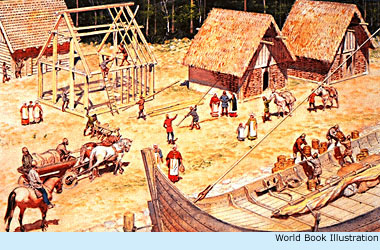

Born: about 980 Died: about 1025 The great Norse explorer Leif Ericson was only 22 years old when he heard of a new land west of Greenland. The adventurous Norseman had to see for himself. At the dawn of this century he sailed off on his quest - and into legend and history.

Viking colonyExploring ran in Leif Ericson's blood. His father was the intrepid explorer Eric the Red, who found land unknown to the Norsemen west of his native Iceland. He called the land Greenland and in 985 moved there with his family, including five-year-old Leif.
Leif became inspired by reports from another Norseman, Bjarni Herjolfsson. While sailing from Iceland to Greenland in 986, Herjolfsson had been blown off course by a storm. When the weather cleared, an unfamiliar coastline lay before him. Herjolfsson never went ashore, but he told other Norsemen of his discovery.
In 1002, Leif sailed forth to find and explore the land that Herjolfsson had only glimpsed. He reached that new land, which he called Vinland for the wild grapes or berries he found growing there.
Leif and his crew spent the winter in Vinland. About the time they returned to Greenland, Erik the Red died. Leif became head of the Greenland colony and never returned to Vinland.
Leif's voyage encouraged other Norse colonists to settle in Vinland. But soon fighting broke out between the colonists and Vinland's local peoples. By the time Leif Ericson died, the Norsemen had abandoned Vinland.